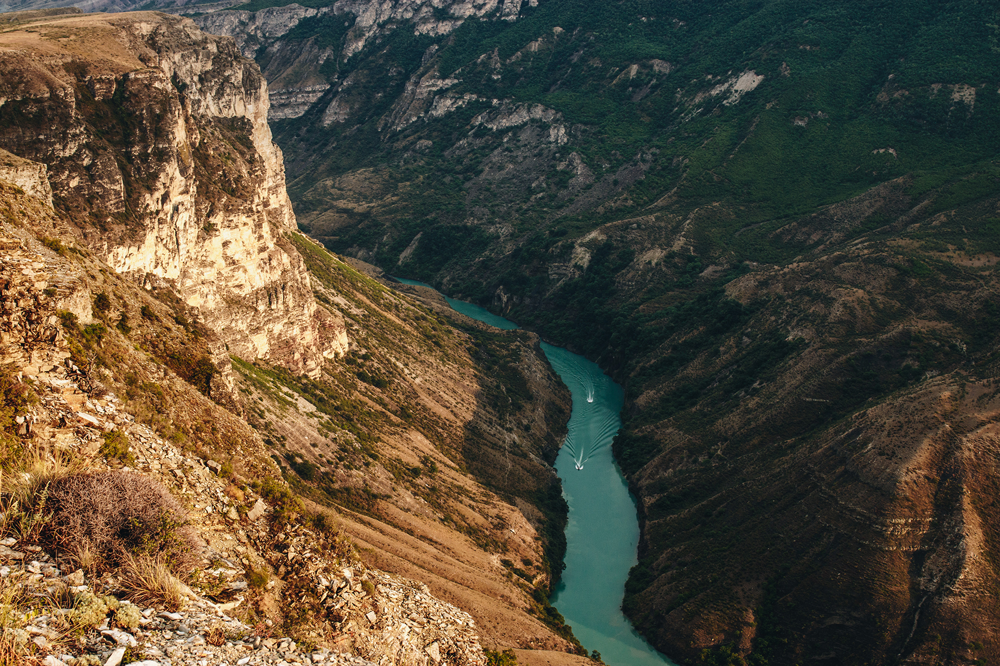
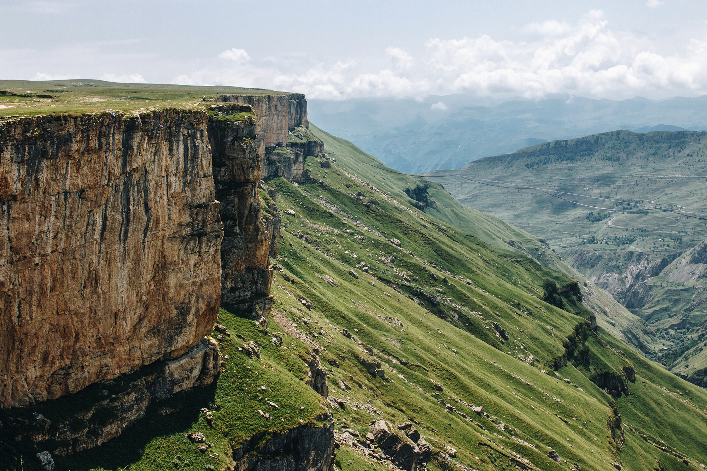

Озеро Казенойам

Эйзенам, Большое Форельное, Голубое, Ретло – все это одно и то же озеро Кезенойам на границе Чечни и Дагестана. История умалчивают, почему оно получило столь много имен. Возможно, это связано с тем, что люди селились на его берегах с древнейших времен, и каждое новое поколение давало ему свое имя. Озеро необычно тем, что цвет воды очень зависит от характера освещения. Он может меняться в диапазоне от ярко-голубого до насыщенного бирюзового. Кезенойам принадлежит сразу двум республикам. Оно раскинулось на территории Веденского района Чечни и Ботлихского района Дагестана. Озеро приютилось на склоне Андийского хребта. Ближайшими населенными пунктами являются села Кезеной и Хой. По северному берегу идет дорога, соединяющая две республики. Со всех сторон озеро окружают невысокие горы, поросшие редкими деревьями. Вдалеке на юге высится вершина Шимерой, на юго-востоке – Цацакой. Кезенойам носит почетный титул регионального памятника природы.
Водное зеркало находится на отметке 1854 метра, что соответствует зоне альпийских лугов. В течение года уровень воды может колебаться на восемь метров! Это зависит от количества снега и осадков. Зимой поверхность покрыта льдом толщиной до 80 сантиметров. Летом вода прогревается до 18 градусов – при такой температуре можно даже купаться.
Сулакский каньон

Сулакский каньон — один из самых глубоких каньонов в мире и самый глубочайший в Европе, его глубина достигает до 1920 метров, а протяжённость 53 километра.
Является одной из самых известных и посещаемых природных достопримечательностей Дагестана, ежегодно его посещают тысячи туристов со всего мира.
Расположен Сулакский каньон в центральной части Дагестана, в долине реки Сулак. Рядом расположен посёлок городского типа Дубки. Ближайший и единственный крупный город с авиасообщением — Махачкала — находится в 55 километрах к востоку по прямой, а расстояние по автомобильной дороге составит около 100 километров.